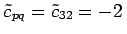
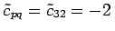

Inhalt Index DeskTop Bronstein

 Optimierung Lineare Optimierung Spezielle lineare Optimierungsprobleme Transportproblem
Optimierung Lineare Optimierung Spezielle lineare Optimierungsprobleme Transportproblem


Bei der Aufstellung des gewöhnlichen Simplextableaus für dieses Problem erhält man ein riesiges Schema vom Typ mit einer großen Anzahl von Nullen: Jede Spalte enthält nur zwei 1-Elemente. Deshalb arbeitet man besser mit einem reduzierten Schema. Das Verfahren besteht aus Simplexschritten, die nur mit Nicht-Null-Elementen des theoretischen Simplextableaus durchgeführt werden. Die Matrix des Simplextableaus enthält die Koeffizienten der Zielfunktion. Die Basisvariablen werden iterativ gegen die Nichtbasisvariablen ausgetauscht, um so jeweils eine zugehörige modifizierte Kostenmatrix zu berechnen. Der Rechengang wird am Beispiel erläutert.
| (18.27a) |
unter den Bedingungen
| (18.27b) |
Dazu werden in  die zu Basisvariablen gehörenden Kosten markiert und p1=0 gesetzt. Die weiteren Größen pi und , auch Potentiale bzw. Simplexmultiplikatoren genannt, werden so errechnet, daß zu markierten Kosten gehörende pi und qj zusammen mit den Kosten cij die Summe 0 ergeben:
die zu Basisvariablen gehörenden Kosten markiert und p1=0 gesetzt. Die weiteren Größen pi und , auch Potentiale bzw. Simplexmultiplikatoren genannt, werden so errechnet, daß zu markierten Kosten gehörende pi und qj zusammen mit den Kosten cij die Summe 0 ergeben:
| Beispiel |
 |
 |
(18.27c) |
| (18.27d) |
Ist , dann ist der gegebene Verteilungsplan  optimal; anderenfalls wird xpq als neue Basisvariable gewählt. Im Beispiel ist .
optimal; anderenfalls wird xpq als neue Basisvariable gewählt. Im Beispiel ist .
| (18.27e) |
| (18.27f) |
wobei xrs Nichtbasisvariable wird. Im Beispiel ist .
| (18.27g) |
| (18.27h) |
| (18.27i) |
Die nächste zu bestimmende Matrix enthält keine negativen Elemente. Deshalb ist ein optimaler Verteilungsplan.